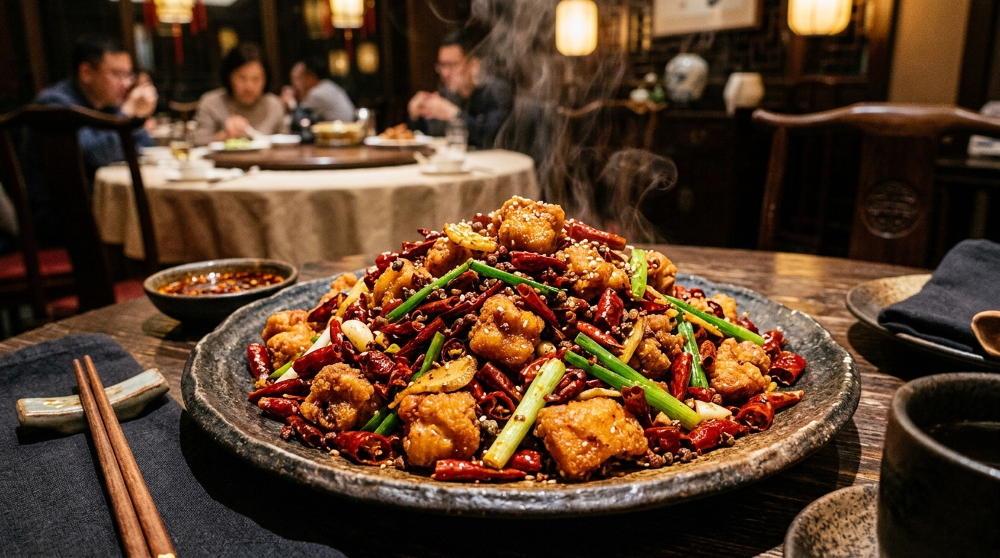

Wok Hei & Mala
Roasting whole Sichuan peppercorns and sun-dried red chilies over intense 100,000-BTU wok burners to capture iconic numbing spicy heat.
Discover Wok & Mala →Charlotte's premier destination for authentic Szechuan and traditional Chinese culinary mastery. Known across the Carolinas for uncompromising regional recipes, we fire intense high-heat woks with fragrant Sichuan peppercorns, dried red facing-heaven chilies, fermented bean pastes, and fresh handmade noodles at 8418 Park Road.

High-heat breath of the wok, authentic Sichuan peppercorns, & scratch handmade dim sum.
Roasting whole Sichuan peppercorns and sun-dried red chilies over intense 100,000-BTU wok burners to capture iconic numbing spicy heat.
Discover Wok & Mala →Hand-pinched pork wontons bathed in garlic red chili oil, crispy scallion pancakes, and sizzling flaming pan cast iron specialties.
Discover Dim Sum & Tea →Located at 8418 Park Rd in South Charlotte. Open 7 days a week for lunch specials, family round-table dining, and express hot takeout.
View Hours & Location →